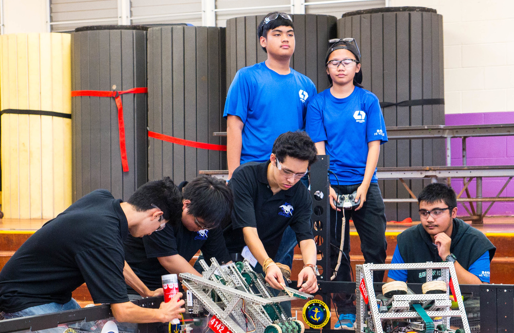

Vex Robotics Competition
Vex Robotics Competition is a string of annual robotics competitions with tournaments spread out throughout the year. Tournaments are held world wide and challenges change annually. Though each iteration of the challenge is different, they all have the same base rules. The each match is held between two alliances each constructed of two teams. Each match consists of two parts, an autonomous portion and a driver controlled portion. The autonomous portion is a 15-second period at the start of each match where all four of the robots autonomously perform tasks to leverage points over the opponents. The driver controlled portion is a 60-second period after the autonomous period where drivers take hold of the robots and drive the robots to accomplish the goals even further.
For this project, I was one of two lead programmers who were responsible for developing a code base that other team members could pick up, adjust slightly and incorporate into their robot's library. The basic framework included the I/O configuration, initialization, a basic framework for scripting a simple autonomous routine, as well as designated control schemes that were common among the drivers of the team. With this method of creating a framework for others to base their work off of, it gave myself and the other lead programmer time to develop our own self education to further develop our own personal code bases. By 2017, the other lead programmer and I were able to teach ourselves basic calculus to encorporate a PID controller into our wheel bases for more accurate movements. An innnovation that we produced that was subtle to spectators but absolutely devastating to the competition was a disruption detection software that prevented two major problems that plagued other robots: falling into an unrecoverable position their autonomous period and developing no advantage because of an early bump that threw off the rest of their robot's measurements. with the use of a gyroscope and a field oriented tracking system, the robot was able to detect if objects had been moved into unfavorable positions and either correct for that unexpected element or capitalize off of these newly introduced elements.
You can learn more at the Vex Robotics Competition website or the Pearl City High School Robotics website.